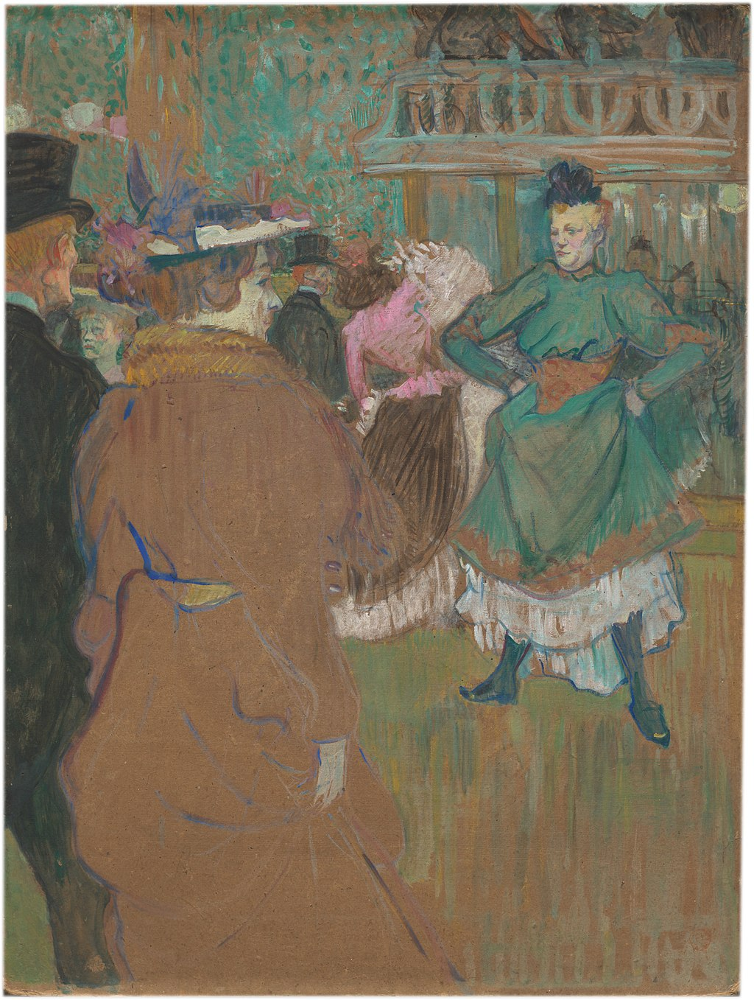

<head>
<meta charset="UTF-8" />
<meta name="keywords" content="drawing, painting" />
<meta name="description" content="drawings by Sunjy" />
<title>Sunjy</title>
<link rel="shortcut icon" type="image/x-icon" href="../../mImages/mCommon/favicon.ico" media="screen" />
<link rel="stylesheet" type="text/css" href="../../mCsses/mCommon/mCssA.css" />
<link rel="stylesheet" type="text/css" href="../../mCsses/mCommon/mCssB.css" />
<link rel="stylesheet" type="text/css" href="../../mCsses/mCommon/mCssC.css" />
<link rel="stylesheet" type="text/css" href="../../mCsses/mCommon/mCssD.css" />
<link rel="stylesheet" type="text/css" href="../../mCsses/mContent/mCssA.css" />
<link rel="stylesheet" type="text/css" href="../../mCsses/mContent/mCssB.css" />
<link rel="stylesheet" type="text/css" href="../../mCsses/mContent/mCssC.css" />
<link rel="stylesheet" type="text/css" href="../../mCsses/mContent/mCssD.css" />
</head>
<script type="text/javascript" src="../../mScripts/mContent/mContentAA.js" /></script>
<script type="text/javascript" src="../../mScripts/mContent/mContentAB.js" /></script>
<script type="text/javascript" src="../../mScripts/mContent/mContentAC.js" /></script>
<script type="text/javascript" src="../../mScripts/mContent/mContentAD.js" /></script>
<script type="text/javascript"></script> 
<script type="text/javascript">
document.write('<div class="mImgAbsolute"></div>');
/*
document.write('<p class="mFontSizeBColor" />From a white paper...</p>');
document.write('<table class="center"><tr><td>');
document.write('');
document.write('</td></tr></table>');
*/
</script>


<script type="text/javascript">
document.write('<p class="mFontSizeBColor" />Quadrille at the Moulin Rouge</p>');
document.write('<p class="mFontSizeSColor" />“Quadrille at the Moulin Rouge” by Henri de Toulouse-Lautrec depicts a woman starting a dance that was fashionable in late 18th- and 19th-century Europe. Usually, it is performed by couples and is related to square dancing. The Moulin Rouge cabaret quickly became a great success because it offered a mixture of unique factors. It had a revolutionary architecture for the auditorium that allowed rapid changes of décor and where everyone could mix. <br><br>The festive champagne evenings allowed people to dance and be entertained thanks to amusing acts that changed regularly. A new dance that became more and more popular, the Can-can, where dances danced in rhythm in titillating costumes.<br><br>Famous dancers and artists performed at the venue. It was also a place loved by artists, including Toulouse-Lautrec, whose posters and paintings secured rapid and international fame for the Moulin Rouge.<br></p>');
document.write('<table class="center" /><tr><td>');
document.write('<br>The festive champagne evenings allowed people to dance and be entertained thanks to amusing acts that changed regularly. A new dance that became more and more popular, the Can-can, where dances danced in rhythm in titillating costumes.<br><br>Famous dancers and artists performed at the venue. It was also a place loved by artists, including Toulouse-Lautrec, whose posters and paintings secured rapid and international fame for the Moulin Rouge.<br>" />');
document.write('</td></tr></table>');
</script>


